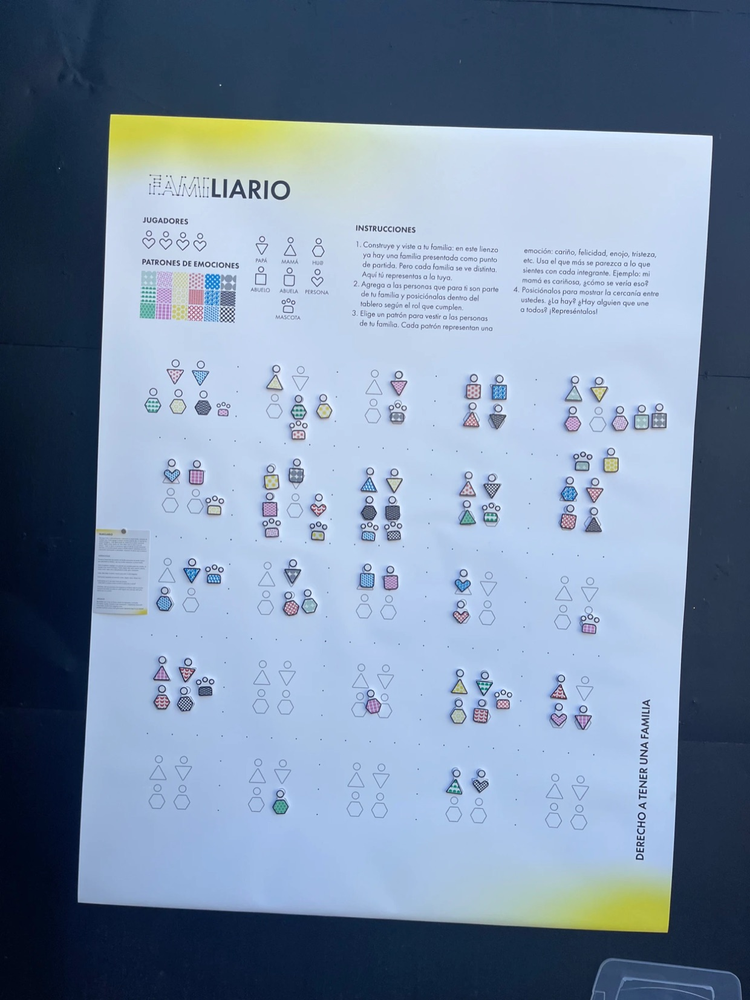
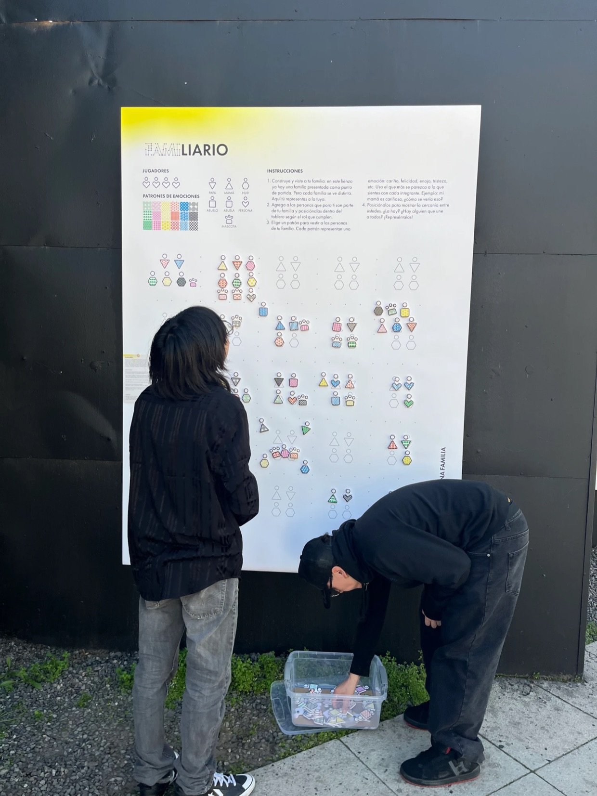

FAMILIARIO
Juego interactivo diseñado para niñeces y adolescencias, en el marco del año temático en el museo de los DDHH: "Memoria joven: Voces de niñez y adolescencia".
Derecho a vivir en familia.



El derecho se aborda desde lo emocional y crítico. Se invita a reconocer y cuestionar sentires hacia el núcleo familiar. No hay respuestas correctas ni únicas, con esto, no se imponen definiciones ni formas específicas de cómo se ve una familia. Se valida lo diverso de ellas, representandose en emociones. ¿Qué figura elijo? ¿Qué emoción representa? ¿A quién? ¿Por qué? El juego fomenta introspección, espacio seguro, reflexión y diálogo.